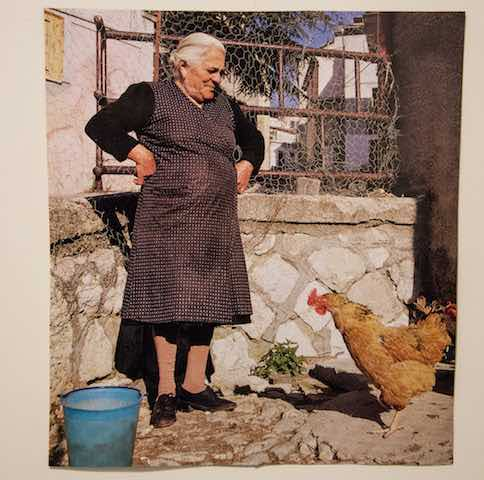

(This is a photo of me.)

(This is a photo of an Italian nonna
who is upset with a chicken.)
ABOUT
Greetings! I'm a pipeline developer at LAIKA Studios in Portland, Oregon.
I do most of my work with Python, Javascript, and Autodesk's Shotgun software.
EDUCATION
Northwestern University - BA in Computer Science and Film.
INTERESTS
Code (especially imaging, creative AI, and machine learning)
Filmmaking (directing and cinematography)
Photography (photojournalism, illustrative, portrait, and experimental)
Theatrical Projection Design (projections, screens, and everything else)
CONTACT
michael.j.nowakowski@gmail.com | github.com/pantsworth | LinkedIn